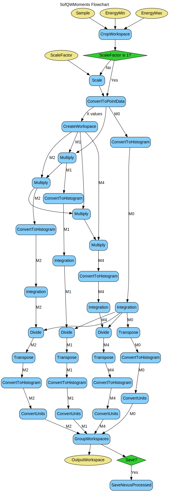

\(\renewcommand\AA{\unicode{x212B}}\)
SofQWMoments v1¶
{kind=link}
SofQWMoments dialog.¶
Summary¶
Calculates the nth moment of y(q,w)
Properties¶
Name |
Direction |
Type |
Default |
Description |
|---|---|---|---|---|
InputWorkspace |
Input |
Mandatory |
Input workspace to use. |
|
EnergyMin |
Input |
number |
-0.5 |
Minimum energy for fit. Default=-0.5 |
EnergyMax |
Input |
number |
0.5 |
Maximum energy for fit. Default=0.5 |
Scale |
Input |
number |
1 |
Scale factor to multiply y(Q,w). Default=1.0 |
OutputWorkspace |
Output |
Mandatory |
Workspace that includes all calculated moments. |
Description¶
Calculates the \(n^{th}\) moment \(M_n\) of \(y(Q,w)\) where \(M_n\) is the integral of \(w^n*y(Q,w)\) over all w for \(n=0\) to 4.
Workflow¶
Usage¶
Example - Running SofQWMoments from with an SofQW workspace.
#create a dummy workspace
function = "name=Lorentzian,Amplitude=1,PeakCentre=5,FWHM=1"
ws = CreateSampleWorkspace("Histogram", Function="User Defined", UserDefinedFunction=function, XMin=0, XMax=10, BinWidth=0.01, XUnit="DeltaE")
ws = ScaleX(ws, -5, "Add") #shift to center on 0
ws = ScaleX(ws, 0.1) #scale to size
ws = RenameWorkspace(ws, OutputWorkspace="irs21760_graphite002_red")
LoadInstrument(ws, InstrumentName='IRIS', RewriteSpectraMap=True)
#Run SofQW and then SofQWMoments
ws = SofQW(ws, '0.4, 0.1, 1.8', EMode='Indirect', EFixed='1.845', OutputWorkspace="irs00001_graphite002_red")
SofQWMoments(ws, OutputWorkspace='Test')
Categories: AlgorithmIndex | Workflow\MIDAS
Source¶
Python: SofQWMoments.py